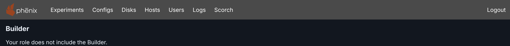

Administration: details¶
Info
This page holds every rule, limit and message of this feature. For the short guide, see Administration.
This page is for phenix administrators.
Availability¶
Each phenix server has the Builder, and no setting turns it on or off. Roles
control who can use it (see Permissions). The editor is at
/builder, and its API is under /api/v1/builder (see
REST API).
phenix sets no Content-Security-Policy on the application page. If a proxy
in front of phenix adds one, the policy must allow workers from the phenix
origin and data: images. The layout engine and Auto-group by name
pattern run in workers. Custom icons are data: images.
Permissions¶
The permission builder use gives a user the Builder. With it, a user
reads and changes all the Builder data of the server: every draft, the three
libraries, and the Builder schemas that give the fields of the Inspector.
Drafts have no owner. Any Builder user can open, change and delete any draft. A draft records who created it and who changed it last, for information only.
To give a role the Builder, add this policy to it:
The policy takes no resource names. The verb "*" also gives use.
builder use gives no access to phenix configs (see
What each task needs and
Resource: configs). A role
that limits topology names does not limit which Builder files its users
can read (see
Who can read a Builder file).
With authentication disabled, all users work as global-admin, with the
Global Admin role (see User Authn/Authz in phenix).
Drafts then show global-admin as the user who created and changed them.
Of the built-in roles, only Global Admin and Builder have builder
use. Global Viewer does not. Give Builder users the Builder role, or a
role such as the example role.
The Builder role¶
The built-in role Builder (builder) is for users who draw and publish
topologies. It holds:
builderuse.configslist,get,create,updateanddelete, onTopology/*,Scenario/*andExperiment/*only. It gives no access to User, Role or Image configs.schemasget,topologiesandscenarioslistandget,experimentslist,get,createandupdate, anddiskslist.
Builder (builder) shows the
role as YAML.
Each time phenix ui starts, it makes sure that the role exists:
- When the store has no role named
builderand no role with the role nameBuilder, phenix creates the role. Thus a deleted role comes back. - When the role exists, phenix keeps its policies. If the role has no
builderuse, phenix adds thebuilderpolicy to the role and to its users. Nothing else changes.
phenix does not change other roles. Add the builder policy to each other
role that must use the Builder. Assign a role on the Users page (see
Updating Users).
What each task needs¶
builder use alone allows these tasks: all work on drafts and snapshots,
undo and redo, the libraries, the default layer set, the Inspector fields,
and Upload of a Builder document from a file or pasted text. The other
tasks also need the permissions in this table.
| Task | Other permissions |
|---|---|
| See the Published Diagrams tab | configs list on the topologies that it lists |
| Open a published diagram, with Open, Edit as a draft or Upload | configs get on that topology, such as Topology/riverside-water. This does not protect a Builder file (see Who can read a Builder file) |
| Import a stored config | configs get on the config, and topologies list (or experiments list) on its name |
| Import a config file, or convert a legacy Builder diagram with Upload | configs get and create |
| Upload a Builder package | configs get. To create the configs that you tick, also create |
| Open a topology in Builder from the Configs page | configs list, and get on the topology. To import it, also create |
| See Exp, which opens the experiment of a publication | experiments get on that experiment |
| Add a stored scenario to a diagram | configs list and scenarios list |
| Store a scenario file from the Scenarios dialog | configs create on Scenario/<name>. To replace a scenario, configs get and update on it |
| See the apps of the diagram's scenario in the Inspector | configs get on Scenario/<name> |
| Download Topology YAML or a package | configs get |
| Use Publish, in the editor or on a draft card | configs update |
| Publish a topology | configs create on Topology/<name> for a new topology, update for an existing one. For a draft imported from a stored config, also configs get and topologies get (or experiments get) on that config |
| Publish an experiment | experiments create and configs create on Experiment/<name>. To update one, update of both |
| Publish a diagram that lists scenarios | configs get and scenarios list on each listed Scenario/<name>. It also needs configs update on each scenario whose topology annotation does not name the topology yet |
| Delete a published topology | configs delete on Topology/<name> |
| Get drive image suggestions and missing-image checks | disks list |
| Run Preflight checks | configs get, and for each check: Host capacity, hosts list. Networks, hosts list for the bridges, experiments list for the VLANs of running experiments (only those it can list by name), and configs get and experiments get on the named experiment. Disk images, disks list. Scenario apps, applications list, and configs get and scenarios list on each listed Scenario/<name>. Without its permission, a check or a part of it shows as unavailable |
Import and Publish read included topologies, such as corp-services, with
the configs get and topologies list permissions of the user. They
warn about an include that the user cannot read.
An import of a config file keeps each ${NAME} and ${NAME:default} as
written. Thus the Builder never shows the environment variables of the
server (see Importing a config file).
The libraries¶
The server keeps one template library, one layer set library and one icon
library. All Builder users share them (see
The template library,
Layer sets and
Custom icons). builder use allows each change.
No role can change these items, Global Admin included:
- The five built-in templates, and the templates and collections of the
template files on the server. A change
answers 409 with the code
template.item.read-only. - The built-in layer set Purdue Model (ID
builtin:purdue). A change or a delete answers 403 with the codelayerset.read-only. - The icons that phenix adds from template files. A rename or a delete answers 403.
Duplicate makes a copy of a read-only template or layer set that users can change. Any Builder user can rename or delete an uploaded icon.
The server has one default layer set (see Layers for new diagrams). When a user deletes it, the server has no default. A diagram keeps its own copies of templates and layers, so a library change does not change the diagram (see Linked templates).
phenix logs each library change with the user name: each add, change or delete of a template, collection or layer set, each choice of a default layer set, and each upload, rename or delete of an icon.
Example role¶
The example role Topology Designer cannot publish, import a config file or delete a topology. It also cannot store a scenario file or create the configs of a package. It can do all other work on drafts and the libraries, import stored configs, open published diagrams and download Topology YAML. A user with the Builder role can then publish its drafts. Download it from topology-designer.role.yaml:
apiVersion: phenix.sandia.gov/v1
kind: Role
metadata:
name: topology-designer
spec:
roleName: Topology Designer
policies:
- resources:
- builder
verbs:
- use
- resources:
- configs
resourceNames:
- "Topology/*"
- "Scenario/*"
- "Experiment/*"
verbs:
- list
- get
- resources:
- topologies
- scenarios
- experiments
resourceNames:
- "*"
verbs:
- list
- get
- resources:
- disks
resourceNames:
- "*"
verbs:
- list
Do not use "*/*" in the configs policy. It also matches User and Role
configs, so a user could read password hashes. To let the role publish, add
create, update and delete to its configs policy.
To add the role, store it as a config, then assign it on the Users page:
Note
phenix copies the policies of a role into a user when you assign the role. After you change a Role config, assign the role to its users again.
What users without a permission see¶
Builder hides, or makes unavailable, each control for a task in What each task needs that the role does not allow. The server still checks each request.
- Without
builderuse, there is no Builder link, and the Configs page has no Builder links or buttons./buildershows only "Your role does not include the Builder." Each Builder API request answers 403. - Without
configsupdate, the command palette gives the reason "Your role cannot publish diagrams." - Without
diskslist, the Diagram checks dialog says "The Builder does not check drive images, because the server did not list its disk images." It says the same when the server lists no images, for example while minimega is not running.

A refused request answers 403, with a message such as "deleting a Builder draft: user bob does not have permission". A draft that does not exist answers 404.
Storage¶
Drafts, published documents and the three libraries are records in the
phenix store (the store.endpoint setting), not configs.
phenix config list and the Configs page do not list them.
Limits:
- The server holds at most 2,000 drafts, damaged drafts included. Past it,
POST /builder/draftsanswers 413 with the codedraft.limit, and a message that says to delete drafts or to run Clean up.GET /builder/draftsreports the limit aslimits.drafts. - A draft keeps at most 50 snapshots and 50 MiB of them. Past either limit, phenix deletes the oldest snapshots.
- A diagram (a Builder document) can be at most 5 MiB. It can hold at most 50 custom icons, 50 device templates and 100 notes of its own.
- The server holds at most 2,000 icons. The built-in icons are not part of this limit, but the Icons tab counts them. An icon is a PNG of at most 96 × 96 pixels and 40,960 bytes.
- The template library can be at most 512 KiB, with at most 200 templates and 50 collections (see Limits).
- The layer set library holds at most 200 layer sets, and the built-in
Purdue Model. A layer set has 1 to 32 layers, and a layer has at most
16 node matchers. A request that adds or replaces a layer set can be at
most 1 MiB, and a layer set file at most 4 MiB. A full library answers 413
with the code
layerset.library.full.
The libraries belong to the server. When someone deletes a user account,
its icons, templates and layer sets stay, and createdBy and updatedBy
keep the user name. The built-in templates and layer set are part of
phenix, not store records. A template library that never changed has no
record. phenix keeps the collections of its template files in memory only.
Drafts and published documents use these store namespaces:
builder.drafts: one record for each draft, with its ID as the key. It holds the metadata of the draft and its snapshots, not the documents.builder.content: one gzip record for each document. The key isdrafts/and the draft and snapshot IDs, orpublished/and the document ID. phenix checks the size and the sha256 digest at each read.builder.published: one record for each published document, with its ID as the key.
Each save, undo or redo, snapshot delete and draft delete writes all its records in one store transaction. Thus the store never holds a draft without its documents, or a part of a failed save. Each stored value has a small header with its revision and times.
The libraries use these store namespaces:
builder.icons: one record for each icon name, with the keyname/and the name in lower case. An icon with old names has a record for each.builder.templates: one record,library, with all the templates and collections.builder.layersets: one record for each layer set, with the keyset/and its ID, and the recorddefaultwhen a user chose a default set.
A publish stores a copy of the diagram that never changes, the published
document. The builder-doc annotation of the topology names it (see
The builder-doc annotation). After a publish,
phenix deletes the older published documents of the topology that are more
than one hour old.
When anyone deletes or renames a topology, by any means, phenix deletes its published documents. A document less than one hour old can stay for a time, because a publish may be in progress. Deleting or renaming a topology never reads, changes or deletes a Builder file (see Renaming and copying a topology).
The browser also keeps some Builder data:
- The IndexedDB database
phenix-builderkeeps changes until the server stores them. - localStorage keeps preferences:
phenix.builder.theme,phenix.builder.panes,phenix.builder.minimap,phenix.builder.shortcutsandphenix.builder.settings. The last one holds the Settings dialog choices, such as Snap to grid, and whether Show connections is on. They apply to that browser, not to the diagram. - The Builder does not read
phenix.builder.layers, the default layers of earlier versions. Logging out deletes the key. - Logging out, or signing in as another user in the same browser, deletes
the rest: unsaved changes, recent commands, the last Auto-group name
pattern, the last Preflight checks (
phenix.builder.preflight) and the collapsed sections of Templates (phenix.builder.palette). See Logging out.
Cleaning up storage¶
When phenix starts, and each hour while it runs, it deletes the published
documents that no topology references. It also deletes the documents in
builder.content that no draft and no published document names. It keeps:
- what phenix stored in the last hour, because a publish or a save may still reference it
- every published document, when a topology cannot be read or its
builder-docannotation does not decode - a published document that it cannot read, and its content
- every Builder file
phenix leaves a published document that it cannot read out of every list,
and logs "skipping unreadable builder published document" with the ID. A
newer phenix may have saved it. To delete it, send
DELETE /builder/documents/{document} with that ID. This deletes only the
record and its content, and changes no config. When the record still names
its topology, the role needs configs get and delete on it. Otherwise
the role needs them on */*, as Global Admin has. If-Match must name the
tag of the stored record. Send any tag, and the 412 answer gives the tag in
its ETag header.
Clean up… in the Builder settings does the same at once. It also deletes each draft that has no change since its last publish. For such a draft, the current snapshot is the last one it published, no newer snapshot follows it, and its topology still references what it published. The topology and its published document stay. These drafts also stay:
- A draft whose topology someone deleted, or published again from another draft. It is then the only copy of its diagram.
- A draft that changes while the cleanup runs.
A cleanup waits for a publish that is in progress.
With ?dryRun=true, POST /builder/cleanup deletes nothing and tells what it
would delete:
drafts lists draft IDs. documents and content count published
documents and documents in builder.content. When the cleanup cannot read
or delete an item, the answer has a Warning header, and the server log
gives the reason. The answer still lists the deleted drafts.
Template files on the server¶
To give all users the same node templates, put template files in the
template directory of the server. When phenix ui starts, it reads each
file as one read-only collection (see
Server collections). A file has the format
that the Node Templates tab downloads (see
Downloading and importing templates
and the example node-templates.yaml).
The directory is <base-dir.phenix>/builder/templates, by default
/phenix/builder/templates. To change it, set base-dir.builder-templates
with the root flag --base-dir.builder-templates, the environment variable
PHENIX_BASE_DIR_BUILDER_TEMPLATES, or the phenix config file (see
Settings):
phenix reads at most 50 files directly in the directory, in name order. It
reads only names that end in .yaml, .yml or .json, in any case, and
not names that start with .. It does not read subdirectories. A file must
be a regular file of at most 8 MiB, as JSON or YAML. phenix follows a
symbolic link only when the link stays in the directory. phenix skips a file
that is not valid, and reads the others.
phenix logs:
skipping builder template file, a warning with thedirectory, thefileand thereason. An example reason isis not a valid template file: templates[1].name: template name "plc" is also the name of templates[0], ignoring case.- A directory that does not exist, at debug level only.
builder template directory cannot be read, a warning, when the path is not a directory.read builder template files, with the number of collections read and of files skipped.
When the directory does not exist or cannot be read, phenix has no server collections, and the Builder starts.
phenix adds the custom icons of a file to the icon library, under their
names, when the library does not have them. These icons have no uploader.
The icon dialog shows them as from "Server", and no user can rename or
delete them. They fill at most 1,000 of the 2,000 icons. phenix skips icons
past that limit, and logs one warning, builder icon library has no room for
more template file icons, with the number skipped. When the library has an
icon of the same name with a different picture, the library keeps its
picture. phenix then logs builder template file icon differs from the icon
library's, which is kept with the file, the icon and the owner of the
library icon (the server for an icon from a template file).
phenix reads the directory only when it starts. Restart phenix ui after
you add, change or delete a file. phenix writes only the new icons to the
store, not the collections.
phenix makes the ID of each collection and template from the file name and the template name. The IDs stay the same across restarts. A renamed file gives its collection a new ID. A diagram links its copy of a template by that ID (see Linked templates).
The builder-doc annotation¶
A topology names its diagram in the builder-doc annotation of its Topology
config. The annotation is a map with up to three keys:
apiVersion: phenix.sandia.gov/v1
kind: Topology
metadata:
name: pump-station
annotations:
builder-doc:
digest: sha256:1c92d3b0c95588fbb20926c1e58bb0452903c4e2cb0ffbf12fcdc19f72717732
id: fd063e784604f43e5c39cc9959501cf117b4dc2be895e92f9bb98e23f8465c4b
path: /phenix/topologies/pump-station/pump-station.builder.json
| Key | What it holds |
|---|---|
digest |
sha256: and 64 lowercase hex digits. It names the stored published document with that content for this topology. With path, it sets which document the file must hold. |
id |
The ID of a published document in the store. It applies only to the topology that received the document. |
path |
The absolute path of a Builder file on the phenix server (see Builder documents in files). |
The map must have at least one of these keys, and no other keys. Publish
writes digest and id, and keeps a path. You write path yourself.
builder-doc is the only annotation that is a map, or in JSON, an object.
All other annotations are text.
Which diagram a topology shows¶
- The published document that the annotation names: by
id, or bydigestwhen there is noid. It must belong to this topology, and must match thedigest, if any. - Otherwise, the Builder file at
path. It must hold the document with thedigest, if any. - Otherwise, none. Published Diagrams does not list the topology. On the
Configs page, its
buildertag and its edit button open the Import dialog, with "Topology pump-station has no Builder diagram to open. Import it to make one."
The stored document comes first because Publish wrote the stored topology from it. The file may have changed since then.
What phenix checks¶
phenix checks the annotation each time anyone creates or updates a Topology
config, by any means. It refuses a config whose builder-doc is not valid.
With phenix config create, the log line before the error gives the reason:
$ phenix config create pump-station.topology.yaml
2026-10-01 21:52:35.595 ERR calling config hook: config validation failed: topology pump-station: builder: invalid request: builder-doc.path: must be an absolute path type=SYSTEM uuid=197b8a05-ccb3-4162-994a-c39d8ebc1dc5
Error: Unable to create configuration from pump-station.topology.yaml (search error logs for 197b8a05-ccb3-4162-994a-c39d8ebc1dc5)
| Reason | What is wrong |
|---|---|
value must be an object |
builder-doc is text, not a map |
property "file" is unsupported |
A key other than digest, id and path |
there must be at least 1 properties |
The map is empty |
builder-doc: digest is not a sha256 digest |
digest is not sha256: and 64 lowercase hex digits |
builder-doc.path: must be an absolute path |
path does not start with / |
builder-doc.path: must be a clean path, with no ".", "..", "//" or trailing "/" |
path has one of these |
builder-doc.path: must end in .json, .yaml or .yml |
path has a different ending, or an ending in capitals, such as .JSON |
A path can be at most 1024 bytes. phenix does not look for the file when
it stores the config.
phenix config edit cannot delete an annotation. To delete builder-doc,
send the config without it with PUT /api/v1/configs/topology/<name>. Or
delete the topology and create it again.
Renaming and copying a topology¶
A published document belongs to one topology name. After a rename, or a
copy of the config under a new name, the id and digest no longer name a
document of that topology. phenix then changes the annotation:
- Without a
path, phenix deletes the annotation. The topology is a plain Topology config until someone publishes it again. - With a
path, phenix deletes theid. Thepathand thedigeststay, so phenix reads the topology from the file. The file must still hold the document with that digest.
Builder documents in files¶
A topology can name a Builder document in a file on the phenix server, instead of a published document. Use this for topologies in a repository that you check out on the server. The diagram then opens in Builder without a publish.
Example¶
The directory /phenix/topologies/pump-station/ holds two files:
pump-station.builder.json, the Builder document (the example file pump-station.builder.json).-
pump-station.topology.yaml, the Topology config, with abuilder-docannotation that names the document:
To make the Topology config:
- Open the document in Builder.
- Click Download > Topology YAML (see Topology YAML).
- Set
metadata.name. - Add the annotation. Do not change the
spec.
If the topology differs from what the document publishes, a draft made from the file cannot update it (see Publishing to a topology that names a Builder file). For this reason, do not use the example file pump-station.topology.yaml here. Its node order is different.
Store the config:
$ phenix config create /phenix/topologies/pump-station/pump-station.topology.yaml
2026-10-01 21:52:35.788 INF configuration created type=SYSTEM kind=Topology name=pump-station
Published Diagrams then lists pump-station with the tag File. Its
diagram opens read only (see
Diagrams read from a file).
phenix reads the file each time and keeps no copy. Thus after a git pull
changes the file, the next Open shows the new diagram. The stored
Topology config does not change. To make it match the file again, create the
config again, or publish a draft made from the file.
Which files phenix reads¶
phenix reads a Builder file only when all of these conditions are true:
- The file is below the phenix base directory:
/phenix, or thebase-dir.phenixsetting (see Settings). - It is not below the VM mount directory:
/phenix/mounts, or themount-dirsetting. - It is a regular file, not a directory, a device or a pipe. phenix follows
a symbolic link only when its target is a relative path that stays below
the base directory and outside the mount directory. phenix refuses an
absolute target, such as from
ln -s /phenix/topologies/a.json b.json. - It is at most 5 MiB.
- It holds one valid Builder document, as JSON or YAML. The content sets the format, not the file name. A YAML file must not use anchors, aliases, merge keys or more than one document.
When the CLI creates the config from a file, phenix fills in ${NAME} in
the path from the environment. A config sent to the REST API fills in only
${BRANCH_NAME}. phenix does not fill in ${NAME} in the Builder file.
phenix resolves the path on the server that runs phenix ui. When several
phenix servers share one store, each server reads its own file system.
phenix reads the file only when someone opens the diagram, makes a draft
from it, or publishes that draft to the topology. Published Diagrams
reads no file, so it shows a card even when the file is missing or not
valid. No config change and no phenix command reads the file.
Who can read a Builder file¶
Anyone whose role has configs get on the topology can open its diagram.
Anyone who can list the config can see the path.
Warning
The name of a topology does not protect its Builder file. A user who
has configs get, and create or update, on any one topology name
can store a topology there with any path below the base directory.
The user can then open the diagram of that file.
For example, a role limited to Topology/teama-* cannot read the
topologies of team B. But its users can store teama-x with the path
of a Builder file of team B, and open it. A fixed layout such as
/phenix/topologies/<name>/ makes the path easy to guess.
Keep a Builder file below the base directory only when each user who can create or update a topology may read it. A published document does not have this problem, because it belongs to its topology.
Pinning the file with a digest¶
Add digest beside path to accept one document only:
builder-doc:
digest: sha256:1c92d3b0c95588fbb20926c1e58bb0452903c4e2cb0ffbf12fcdc19f72717732
path: /phenix/topologies/pump-station/pump-station.builder.json
When the file holds a different document, the diagram does not open.
The digest is the SHA-256 of the document as phenix writes it, not of the
file. sha256sum of a YAML file, or of a JSON file with different spacing,
key order or final line break, gives a different value. To get the digest,
use the REST API (see Examples).
When the file cannot be used¶
Opening the diagram then fails with "Could not open the diagram of topology
pump-station." and one of these sentences. Each sentence names the path, but
not the file content. The REST API gives the same sentence as message. The
phenix log gives builder document file not usable, with the topology, the
path and the reason.
| Message | Status | Why |
|---|---|---|
| "Builder file … is outside /phenix, the directory phenix reads Builder files from." | 422 | The path is not below the base directory, or it is below the mount directory |
| "Builder file … does not exist on this phenix server." | 404 | No file is at the path, or a part of the path is a file |
| "phenix cannot read Builder file …." | 422 | phenix has no read permission, a symbolic link is not allowed, or the read failed |
| "Builder file … is not a regular file." | 422 | The path is a directory, a device or a pipe |
| "Builder file … is larger than 5 MiB." | 413 | The file is too large |
| "Builder file … is not a valid Builder document. Upload it in the Builder to see why." | 422 | The file is not a valid Builder document. Upload shows the problem (see Uploading a Builder document) |
| "Builder file … does not match the digest topology pump-station records for it." | 422 | The file holds a document with a different digest |
Editing and publishing¶
Edit as a draft makes a draft from the file (see Diagrams read from a file). For when that draft can update the topology, see Publishing to a topology that names a Builder file.
Publish never writes the file. It stores a published document and writes
digest and id beside the path:
builder-doc:
digest: sha256:4ba9ae46494bb7d2498f5119b55996f332c52c1b95d79502361afbf50707cbc3
id: 89f0a9779c2e5892da9f7a9ae2ed5c58c564fe57ea86f50f4452f174cb68ad93
path: /phenix/topologies/pump-station/pump-station.builder.json
The topology then shows the published document, without the File tag.
The file is out of date until you replace it. The path stays for a
different phenix server that gets this config without the published
document. That server reads its own file, if the file matches the digest.
REST API¶
Scripts use the same REST API as the web UI, under /api/v1. The
interactive API docs of a running server, at /docs/, describe each route
under the Builder tag (see
Interactive API Docs).
No single request publishes a Builder file. Create a draft from the document, then publish the draft.
Each route needs builder use. These routes also need configs
permissions:
| Route | What it does | configs permission |
|---|---|---|
POST /builder/drafts/{draft}/publish |
Create or update the Topology and Experiment configs, and add the topology to the topology annotation of each listed scenario. With "dryRun": true, tell what publishing would change, and write nothing. A dry run needs no If-Match |
The permissions of each config |
POST /builder/drafts/{draft}/preflight |
Run the preflight checks named in checks (capacity, network, disks, apps) on the current document, against the named experiment, if any |
get, and the permissions of each check (see What each task needs) |
GET /builder/sources |
The configs that a document can come from or publish with | list |
POST /builder/generate |
Make a document from a stored Topology or Experiment config, or a config file, with the import options (includes, copy, name) |
get. create for a config file |
POST /builder/legacy |
Convert a legacy Builder diagram, or a Topology config file that holds one, into a document | get and create |
POST /builder/export/topology |
The Topology YAML that a document would publish | get |
POST /builder/package |
The Builder package of a document, with the sections in include |
get. For each config in the package, get with scenarios or topologies list |
POST /builder/package/resolve |
For each item that the package diagram needs: present, missing, different or unknown on this server |
get. list for icons, disks list for disk images, applications list for apps |
GET /builder/documents |
List the published documents (source store), and the topologies that name a Builder file (source file, with path and no id) |
list |
GET /builder/documents/{document} |
Read a published document | get on its topology |
DELETE /builder/documents/{document} |
Delete a published topology and its published documents, or an unreadable published document (see Cleaning up storage) | get and delete on the topology |
GET /builder/topologies/{topology}/document |
Read the diagram that builder-doc names, from the store or the Builder file |
get on the topology |
These routes need only builder use:
| Route | Notes |
|---|---|
GET /schemas/builder/v1, /schemas/builder/templates/v1, /schemas/builder/package/v1, /schemas/builder/layersets/v1 |
The JSON Schemas of the Builder document, a template file, a Builder package and a layer set file |
GET, POST /builder/drafts |
The list has drafts, latest change first, damaged (drafts that this server cannot read) and limits.drafts |
GET, DELETE /builder/drafts/{draft} |
GET gives the current document. DELETE also deletes a damaged draft |
GET, POST /builder/drafts/{draft}/snapshots |
POST saves a new version of the document |
GET, DELETE /builder/drafts/{draft}/snapshots/{snapshot} |
current names the current snapshot, which DELETE cannot delete |
PATCH /builder/drafts/{draft}/cursor |
Undo and redo: choose the current snapshot |
POST /builder/cleanup |
See Cleaning up storage |
GET, POST /builder/icons |
The list has no images. It gives maxIcons and an etag. With If-None-Match of that tag, it answers 304 while the list does not change. POST uploads a PNG under a name |
GET, PUT, DELETE /builder/icons/{icon} |
GET reads an icon and its image, by its name or an old name. PUT renames an uploaded icon, and keeps at most 16 old names. DELETE deletes an uploaded icon and all its names |
GET /builder/templates |
The library (templates, collections), the built-in templates (builtins) and the server collections (preloaded) |
POST /builder/templates/items, PUT /builder/templates/items/{template} |
Add templates, and with collection, a new collection that holds them. Replace a template |
POST /builder/templates/collections, PUT /builder/templates/collections/{collection} |
Add or replace a collection |
POST /builder/templates/delete |
Delete templates and collections |
GET, POST /builder/layersets |
The list has the built-in sets first, then the others by name. It gives defaultId, defaultEtag, damaged (records that this server cannot read) and the limits |
GET, PUT /builder/layersets/default |
Read or choose the default layer set. "id": null clears the choice |
GET, PUT, DELETE /builder/layersets/{layerset} |
PUT and DELETE do not accept a built-in set |
A change to a read-only library item answers as The libraries tells.
These requests need an If-Match header with the etag of the item from
the last response: each change to an existing draft, PUT and DELETE of
a layer set, PUT of a template or a collection,
PUT /builder/layersets/default, and DELETE of an icon or a published
topology. A request without it answers 400. An older tag answers 412
(template.item.stale, layerset.stale or request.stale) with the
current ETag. Then read the item again, check it, and send the request
again. POST /builder/templates/delete names each item with its etag in
the body ({"templates": [{"id": "…", "etag": "\"3\""}]}). When one of them
changed, it answers 412 and deletes nothing.
Draft responses also have the ETag in their body, as etag. Use that value,
because a proxy that compresses responses can change the ETag header. The
etag of an icon changes at a rename. The etag of a published topology
changes at each change of the topology.
Each template, collection, layer set and icon in a response has createdBy
(who added the item) and updatedBy (who changed it last). An item that no
user added, such as a built-in template, has no createdBy.
With authentication enabled, send a token in the X-Phenix-Auth-Token
header, as Bearer <token> (see
Generating User Authentication Tokens).
A refused request answers with a JSON body whose code names the failure,
such as publish.topology.exists. When a document is not valid, or
only publishing refuses a draft, issues lists each problem with its own
code. The warnings and failures of a publication are issues too.
Error Codes lists every code.
Response headers¶
Each Builder response, the schema routes included, has
X-Content-Type-Options: nosniff, because each response is JSON. Each also
has Cache-Control: no-store, so no browser or proxy keeps a copy, also of
an error or a 304 answer.
The icon responses hold the images as base64 in the JSON. They also have
Content-Security-Policy: default-src 'none'; frame-ancestors 'none'. If a
browser shows one of them as a page, it loads, runs and frames nothing.
Examples¶
These examples use the example lab (see
Builder Examples) and jq. Set the server and
your token first:
List the drafts:
curl -s -H "X-Phenix-Auth-Token: Bearer $TOKEN" "$PHENIX/api/v1/builder/drafts" \
| jq '.drafts[] | {title, createdBy, id, etag}'
{
"title": "Riverside Water",
"createdBy": "darrow",
"id": "6290aef3-24a3-4126-b90a-308cbf561f17",
"etag": "\"10\""
}
Make a document from the stored topology riverside-water, as Import
does. POST /builder/generate writes nothing:
curl -s -X POST -H "X-Phenix-Auth-Token: Bearer $TOKEN" -H 'Content-Type: application/json' \
-d '{"source":"Topology/riverside-water"}' "$PHENIX/api/v1/builder/generate" > generated.json
jq '{name: .document.metadata.name, source: .source.fullName, warnings}' generated.json
{
"name": "riverside-water",
"source": "Topology/riverside-water",
"warnings": [
"The Builder added 2 nodes from included topology corp-services (2 nodes). The diagram shows them read only. Edit them in their own topology. Publishing keeps includeTopologies and does not copy them."
]
}
Store the document as a draft. The sourceToken connects the draft to its
topology, so the draft can publish back to riverside-water:
jq '{title: .document.metadata.name, sourceToken: .source.fullName, document}' generated.json \
| curl -s -X POST -H "X-Phenix-Auth-Token: Bearer $TOKEN" -H 'Content-Type: application/json' \
-d @- "$PHENIX/api/v1/builder/drafts" > created.json
jq '{id, createdBy, title, etag}' created.json
{
"id": "6b471c7d-dd32-44e7-ae85-a889f377747f",
"createdBy": "darrow",
"title": "riverside-water",
"etag": "\"14\""
}
To keep the name of an uploaded file, which the Inspector shows as
Source file, send sourceFile beside document. It must be a plain
file name of at most 255 bytes, with no / or \.
The server writes who made and last saved the diagram into its metadata
(see
Who made and last saved a diagram).
The answers to creating and saving a draft have no document. They give
createdBy, createdAt, updatedBy and updatedAt as stamp.
Convert a legacy Builder diagram, as Upload does. content
is the XML of the diagram, or a Topology config that holds it in
builder-xml. name names a diagram that has no topology. The answer has
the same form as for POST /builder/generate:
jq -Rs '{content: ., name: "plant"}' plant.xml \
| curl -s -X POST -H "X-Phenix-Auth-Token: Bearer $TOKEN" -H 'Content-Type: application/json' \
-d @- "$PHENIX/api/v1/builder/legacy" > converted.json
jq '{name: .document.metadata.name, warnings}' converted.json
Delete the draft with its current ETag. The delete answers 204, or 400
without If-Match:
ID=$(jq -r .id created.json)
ETAG=$(curl -s -H "X-Phenix-Auth-Token: Bearer $TOKEN" "$PHENIX/api/v1/builder/drafts/$ID" | jq -r .etag)
curl -s -X DELETE -H "X-Phenix-Auth-Token: Bearer $TOKEN" -H "If-Match: $ETAG" \
"$PHENIX/api/v1/builder/drafts/$ID"
Read the diagram of the topology pump-station (see
Builder documents in files), without the
document:
curl -s -H "X-Phenix-Auth-Token: Bearer $TOKEN" \
"$PHENIX/api/v1/builder/topologies/pump-station/document" | jq 'del(.document)'
{
"source": "file",
"digest": "sha256:1c92d3b0c95588fbb20926c1e58bb0452903c4e2cb0ffbf12fcdc19f72717732",
"size": 6517,
"target": "pump-station",
"kind": "Topology",
"config": "Topology/pump-station",
"path": "/phenix/topologies/pump-station/pump-station.builder.json"
}
digest is the digest to write beside path (see
Pinning the file with a digest). For a
file, the answer has "topologyDiffers": true when the stored topology
is not what the document publishes. For a published document, source is
store, and the answer has id, createdBy and createdAt, not path.
Compressed files¶
The Builder page loads large script files that other pages do not load. The UI build writes a Brotli copy and a gzip copy of each, when the copy is smaller. phenix sends the copy that the browser accepts, and tells the browser to keep the file for one year. A changed file gets a new name, so browsers get it after an upgrade.
The environment variable PHENIX_BROTLI_QUALITY sets the Brotli quality of
the UI build: a whole number from 0 to 11, by default 9. A higher quality
makes smaller copies and a slower build. Another value stops the build with
an error.
The Docker and Podman images both build from docker/Dockerfile, which
sets quality 11. make docker uses docker/Dockerfile. make deb builds
docker/Dockerfile, then makes the package from that image. When
PHENIX_BUILD_IMAGE names an image that you built before, make deb uses
that image and its quality. All other builds, such as make build and
npm run build, use quality 9.
To build the UI with quality 11:
To build the Docker image with a different quality:
Troubleshooting¶
| What you see | Why | What to do |
|---|---|---|
| No Builder link, or "Your role does not include the Builder." | The role has no builder use |
See Permissions |
| A button is missing or unavailable, or "The Builder does not check drive images, because …" | The role does not allow that task. A published diagram opens read only, without Publish | See What each task needs |
| "Could not publish the diagram. Adding topology riverside-water-b to scenario riverside-water: user … does not have permission" | The role cannot update a scenario that the diagram lists | Give the role configs update on Scenario/riverside-water, or remove the scenario from the diagram |
| "Could not publish the diagram. Scenario riverside-water does not exist." | The listed scenario does not exist, or the role cannot read it | Store the scenario, give the role configs get and scenarios list on it, or remove it from the diagram |
| The Publish dialog says that the topology "already exists. This diagram cannot update it" | The draft did not come from that topology and did not publish to it. For a topology from the legacy Builder, only the draft imported from it can update it | Publish under a different name, or import the topology and change that draft (see Publishing and Legacy Builder) |
| The Publish dialog says that the topology "changed after this diagram published it" | Someone changed the topology after this draft published it | Import the topology again, or publish under a different name (see Publishing again) |
| "Could not convert the legacy diagram. …" | The file is not a legacy Builder diagram, or it is a Topology config without builder-xml |
See Converting a file |
| "Could not open the diagram of topology pump-station. Builder file … " | phenix cannot use the Builder file of the topology | See When the file cannot be used |
| "Topology … does not exist, or you do not have permission to read it." | Someone deleted the topology, or the role cannot list it | Give the role configs list and topologies list on the topology |
phenix config create skips a file with "skipped Builder document. Upload it in the Builder to publish it", or refuses it as "a Builder document, not a configuration" |
The file is a Builder document, not a config | See Builder documents and phenix config create |
| The save state says "Offline: …" | The browser cannot reach the server, or the server did not answer in time | Keep the tab open. Saving tries again when the server answers (see Working offline) |
| "This draft changed on the server" | Someone saved a newer version of the draft first | See Draft merging |
| The sign-in page opens while you work in the Builder | The session ended (--jwt-lifetime, by default 24 hours) |
Log in. Changes that the server did not have are lost (see Logging out) |
| A draft card says "You cannot open this draft, because the Builder cannot read it. A newer version of phenix may have saved it." | A newer phenix saved the draft | See Damaged drafts |
| "Auto layout failed. The layout engine could not start." or "Auto layout failed. The Builder could not load the layout engine. Reload the page to try again.", or "The Builder could not check the pattern. Reload the page to try again." in Auto-group by name pattern | A proxy or a content security policy may block the worker scripts of phenix | Reload the page. Let the proxy serve the phenix scripts, and let the policy allow workers from the same origin (see Availability) |
| "The Builder could not convert this image. Save it as a PNG, and then upload it again." | The browser could not make a PNG icon from the file, for example an SVG that draws nothing on its own | Save the picture as a PNG and upload that |
| "The Builder cannot read the template library. A newer version of phenix may have saved it." on the Node Templates tab | A newer phenix saved the template library. The server refuses each library change with 409 | Use that phenix version. The built-in templates and the server collections are still listed |
| "The server cannot read 1 layer set. A newer version of phenix may have saved it." on the Layers tab | A newer phenix saved that layer set. The list leaves it out | Use that phenix version. The other layer sets are still listed |